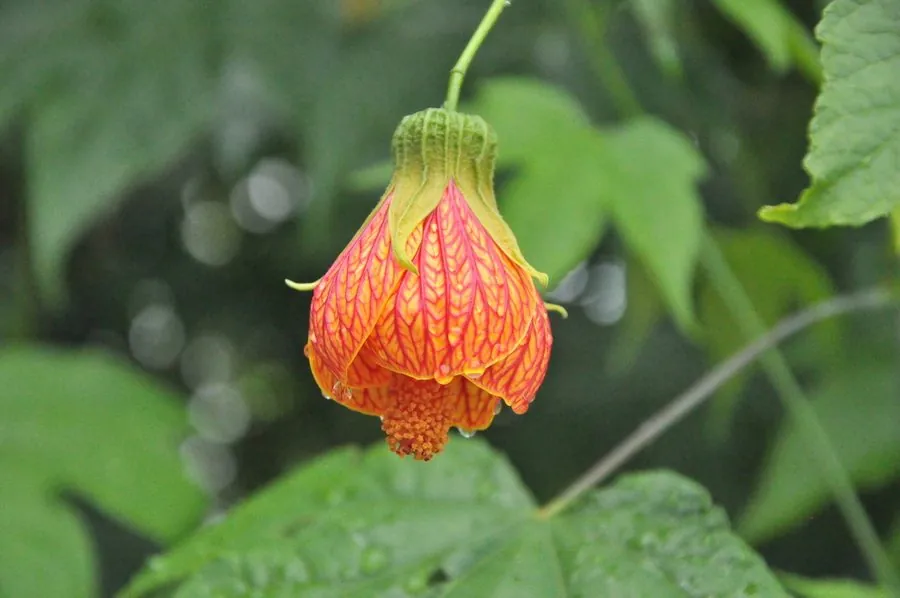

灌木与花木 · 植物界
金铃花 Abutilon pictum

锦葵科苘麻属常绿灌木，花冠橙红色、具紫红色脉纹，下垂如铃，是热带与亚热带庭园中艳丽的观花植物。
- 分类
- 门被子植物门纲木兰纲目锦葵目科锦葵科属苘麻属
- 栖息环境
- 南美亚热带林缘，喜温暖湿润、阳光充足
- 地理分布
- 原产巴西、阿根廷；中国华南、西南及世界温暖地区栽培
- 保护级别
- IUCN 暂无评估；栽培广泛，野生种群未受明显威胁
物种志
金铃花为常绿灌木，高 2–3 米，枝条细长，被短柔毛。叶片掌状 5–7 裂，长 8–15 厘米，边缘具粗齿，形似枫叶，因此得名“金铃花”。花单生叶腋，花梗细长下垂，花冠钟形，橙红色至橙黄色，具紫红色网脉，直径 5–7 厘米；蒴果成熟时开裂，种子肾形。
本种原产巴西、阿根廷等南美地区，喜温暖湿润、阳光充足的环境，在中国华南、西南常作庭园观花灌木。它花形如铃、色彩艳丽，叶形又似枫叶，是花叶俱美的观赏植物。金铃花不耐寒，北方需盆栽温室越冬；生长迅速，需定期修剪以保持株形。其花蜜丰富，能吸引蜂类与蝴蝶，是热带花园中的蜜源植物。
形态与习性
- 株高2–3 米，枝条细长
- 花期5–10 月，花橙红色带紫脉
- 花径5–7 厘米，下垂如铃
- 光照喜光，夏季适当遮阴
- 水分喜湿润，忌积水
- 土壤肥沃、排水良好的壤土
- 主要用途庭园观赏、花境与盆栽
趣味知识
- 金铃花的叶片掌状开裂，形似枫叶，因此又有“花枫”的俗称。
- 它的花冠橙红并布满紫红色网脉，像一盏带花纹的灯笼。
- 金铃花原产南美，19 世纪传入欧洲后成为温室中的观赏花木。
- 它生长迅速，盆栽时需定期修剪，否则枝条容易徒长。